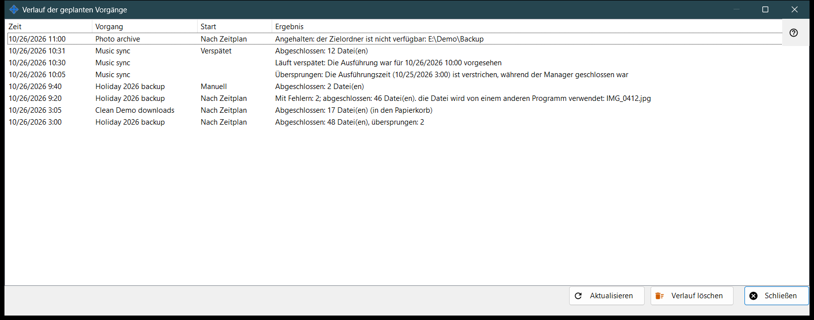
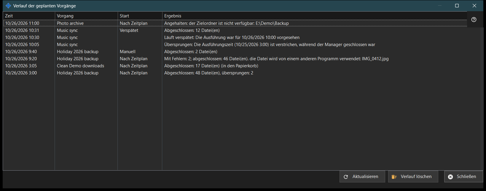

Verlauf der geplanten Vorgänge
Verwendungszweck
Zeigt die jüngsten Läufe und Hinweise der geplanten Dateivorgänge, wie sie im Journal aufgezeichnet sind. Geplante Dateivorgänge werden zusammen mit Share Manager installiert - ein Paket, kein separater Download und kein Windows-Dienst - und laufen, solange Share Manager in Ihrer angemeldeten Sitzung läuft; sie brauchen keine Ordnerfreigabe, keinen Server, keinen offenen Port und keine Administratorrechte. Das Fenster öffnet sich über «Verlauf..» im Fenster «Geplante Vorgänge» und auf der Seite «Geplante Dateivorgänge» der Einstellungen von Share Manager.


In dieser Reihenfolge
- Lesen Sie die Liste: Zeit, Vorgang, Start und Ergebnis.
- Vergrößern Sie das Fenster, wenn ein Ergebnis lang ist.
- Klicken Sie auf «Aktualisieren», um das Journal erneut zu lesen.
- Klicken Sie auf «Verlauf löschen» und bestätigen Sie, um es zu leeren.
- Klicken Sie auf «Schließen».
Die Elemente
Spalten
Zeit, Vorgang (sein Name), Start und Ergebnis. Start ist Nach Zeitplan, Manuell, Alle ausführen oder Verspätet und bleibt bei einem Hinweis leer. Das Fenster liest beim Öffnen und bei «Aktualisieren» die letzten 200 Journaleinträge; es aktualisiert sich nicht von selbst.
Ergebnisse eines Laufs
«Abgeschlossen: N Datei(en)», mit «, übersprungen: M», wenn manche ausgelassen wurden, und «(in den Papierkorb)» bei Löschungen. «Mit Fehlern: N; abgeschlossen: M Datei(en)» gefolgt von der ersten Ursache, etwa eine Datei in Benutzung, kein Zugriff, eine nicht gefundene oder geänderte Datei oder ein volles Laufwerk. «Angehalten: ..», wenn eine Hürde einen Lauf beendet, zum Beispiel ein nicht erreichbarer Ordner, eine Ressource ohne gespeichertes Passwort oder mit unbestätigtem Serverschlüssel oder ein Gerät, das offline ist. «Nicht gestartet: ..», wenn die Definition abgelehnt wird, außerdem «Übersprungen: ..» und «Unterbrochen». Das Journal speichert Codes, nicht rohen Fehlertext, daher folgt die Formulierung der aktuellen Sprache. Ist eine Seite Google Drive, kann die Ursache auch eine fehlende Verbindung zu Google Drive sein, fehlender Platz dort, eine Abmeldung oder eine Datei über der Paketgrenze.
Hinweise
Eine Zeile ohne Start ist ein Hinweis: «Übersprungen: Die Ausführungszeit (..) ist verstrichen, während der Manager geschlossen war», «Läuft verspätet: Die Ausführung war für .. vorgesehen», «Abgelehnt: Dieser Vorgang wird bereits ausgeführt oder wartet in der Warteschlange» und «Fortgesetzt: Die Ursache des Stopps ist behoben».
Verlauf löschen
Fragt «Den Verlauf der geplanten Vorgänge löschen? Die Vorgänge selbst und ihr Zeitplan bleiben unverändert.» mit Nein als Standardantwort. Es leert nur dieses Journal; die Vorgänge und ihre Zeitpläne bleiben bestehen. Die Schaltfläche ist deaktiviert, solange der Verlauf leer ist.
Managereinstellungen · SFTP-Freigabeeinstellungen · Einstellungen des Austauschservers